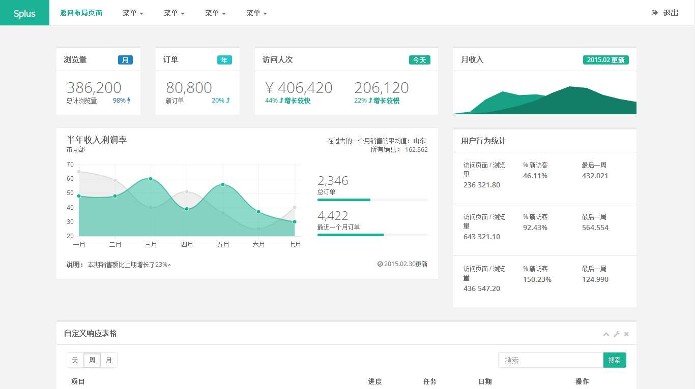

S+ 后台主题UI框架
非常感谢您选择和使用S+，在使用S+之前请注意以下事项：
1.为了保证所有功能都可正常使用，请在服务器环境（本地测试可使用localhost）下运行；
2.请认真阅读本文档后再开始使用S+；

非常感谢您选择和使用S+，在使用S+之前请注意以下事项：
1.为了保证所有功能都可正常使用，请在服务器环境（本地测试可使用localhost）下运行；
2.请认真阅读本文档后再开始使用S+；
S+是一个完全响应式，基于Bootstrap3.4.0最新版本开发的扁平化主题，她采用了主流的左右两栏式布局，使用了Html5+CSS3等现代技术，她提供了诸多的强大的可以重新组合的UI组件，并集成了最新的jQuery版本(v2.1.1)，当然，也集成了很多功能强大，用途广泛的jQuery插件，她可以用于所有的Web应用程序，如网站管理后台，网站会员中心，CMS，CRM，OA等等，当然，您也可以对她进行深度定制，以做出更强系统。
Splus/
├── css/
├── docs/
├── font-awesome/
├── fonts/
├── img/
├── js/
├── plugins/
├── tools/
├── 404.html
├── 500.html
├── badges_labels.html
├── basic_gallery.html
├── buttons.html
├── calendar.html
├── carousel.html
├── chat_view.html
├── code_editor.html
├── contacts.html
├── css_animation.html
├── draggable_panels.html
├── empy_page.html
├── faq.html
├── file_manager.html
├── form_advanced.html
├── form_avatar.html
├── form_basic.html
├── form_builder.html
├── form_editors.html
├── form_file_upload.html
├── form_markdown.html
├── form_simditor.html
├── form_validate.html
├── form_webuploader.html
├── form_wizard.html
├── forum_main.html
├── graph_echarts.html
├── graph_flot.html
├── graph_morris.html
├── graph_peity.html
├── graph_rickshaw.html
├── graph_sparkline.html
├── grid_options.html
├── iconfont.html
├── icons.html
├── index.html
├── index_1.html
├── index_2.html
├── index_3.html
├── index_4.html
├── invoice.html
├── invoice_print.html
├── layer.html
├── layerdate.html
├── layouts.html
├── lockscreen.html
├── login.html
├── mail_compose.html
├── mail_detail.html
├── mailbox.html
├── modal_window.html
├── nestable_list.html
├── notifications.html
├── pin_board.html
├── profile.html
├── project_detail.html
├── projects.html
├── register.html
├── search_result.html
├── skin-config.html
├── table_basic.html
├── table_data_tables.html
├── table_jqgrid.html
├── tabs_panels.html
├── timeline.html
├── timeline_v2.html
├── toastr_notifications.html
├── tree_view.html
├── tree_view_v2.html
├── typography.html
├── validation.html
├── webim.html
├── widgets.html
主题的正常结构元素包含以下几个方面：
#wrapper body元素之后的主容器nav .navbar-static-side 左侧导航菜单.#page-wrapper 页面内容的主容器nav .navbar-static-top 顶部菜单.page-heading 页面标题及包屑式导航容器.wrapper-content html元素主容器.footer 页脚主容器页面 <head /> 中，包含meta和css等
<!DOCTYPE html>
<head>
<!-- Meta -->
<meta charset="utf-8">
<meta name="viewport" content="width=device-width, initial-scale=1.0">
<title>S+ 后台主题UI框架 - 页面</title>
<!-- CSS文件 -->
<link href="css/bootstrap.min.css" rel="stylesheet">
<link href="font-awesome/css/font-awesome.css" rel="stylesheet">
<link href="css/animate.css" rel="stylesheet">
<link href="css/style.css" rel="stylesheet">
</head>
二级菜单示例
<ul class="nav" id="side-menu">
<li class="nav-header">
<div class="dropdown profile-element"> <span>
<img alt="image" class="img-circle" src="img/profile_small.jpg">
</span>
<a data-toggle="dropdown" class="dropdown-toggle" href="#">
<span class="clear"> <span class="block m-t-xs"> <strong class="font-bold">Beau-zihan</strong>
</span> <span class="text-muted text-xs block">超级管理员<b class="caret"></b></span> </span> </a>
<ul class="dropdown-menu animated fadeInRight m-t-xs">
<li><a href="profile.html">个人资料</a></li>
<li><a href="contacts.html">联系我们</a></li>
<li><a href="mailbox.html">信箱</a></li>
<li class="divider"></li>
<li><a href="login.html">安全退出</a></li>
</ul>
</div>
<div class="logo-element">
IN+
</div>
</li>
<li>
<!-- 其他项 -->
</li>
</ul>
二级菜单示例
<nav class="navbar navbar-static-top" role="navigation">
<div class="navbar-header">
<button aria-controls="navbar" aria-expanded="false" data-target="#navbar" data-toggle="collapse" class="navbar-toggle collapsed" type="button">
<i class="fa fa-reorder"></i>
</button>
<a href="#" class="navbar-brand">Splus</a>
</div>
<div class="navbar-collapse collapse" id="navbar">
<ul class="nav navbar-nav">
<li class="active">
<a aria-expanded="false" role="button" href="layouts.html"> 返回布局页面</a>
</li>
<li class="dropdown">
<a aria-expanded="false" role="button" href="#" class="dropdown-toggle" data-toggle="dropdown"> 菜单 <span class="caret"></span></a>
<ul role="menu" class="dropdown-menu">
<li><a href="">菜单列表</a>
</li>
<li><a href="">菜单列表</a>
</li>
<li><a href="">菜单列表</a>
</li>
<li><a href="">菜单列表</a>
</li>
</ul>
</li>
<li class="dropdown">
<a aria-expanded="false" role="button" href="#" class="dropdown-toggle" data-toggle="dropdown"> 菜单 <span class="caret"></span></a>
<ul role="menu" class="dropdown-menu">
<li><a href="">菜单列表</a>
</li>
<li><a href="">菜单列表</a>
</li>
<li><a href="">菜单列表</a>
</li>
<li><a href="">M菜单列表</a>
</li>
</ul>
</li>
<li class="dropdown">
<a aria-expanded="false" role="button" href="#" class="dropdown-toggle" data-toggle="dropdown"> 菜单 <span class="caret"></span></a>
<ul role="menu" class="dropdown-menu">
<li><a href="">菜单列表</a>
</li>
<li><a href="">菜单列表</a>
</li>
<li><a href="">菜单列表</a>
</li>
<li><a href="">菜单列表</a>
</li>
</ul>
</li>
<li class="dropdown">
<a aria-expanded="false" role="button" href="#" class="dropdown-toggle" data-toggle="dropdown"> 菜单 <span class="caret"></span></a>
<ul role="menu" class="dropdown-menu">
<li><a href="">菜单列表</a>
</li>
<li><a href="">菜单列表</a>
</li>
<li><a href="">菜单列表</a>
</li>
<li><a href="">菜单列表</a>
</li>
</ul>
</li>
</ul>
<ul class="nav navbar-top-links navbar-right">
<li>
<a href="login.html">
<i class="fa fa-sign-out"></i> 退出
</a>
</li>
</ul>
</div>
</nav>
主内容包括页面顶部和页面内容
<div class="row wrapper border-bottom white-bg page-heading">
<div class="col-lg-9">
<h2>这里是标题</h2>
<ol class="breadcrumb">
<li>
<a href="index.html">这是</a>
</li>
<li class="active">
<strong>包屑式导航</strong>
</li>
</ol>
</div>
<div class="col-lg-3">
<div class="title-action">
<a href="" class="btn btn-primary">活动区域</a>
</div>
</div>
</div>
<div class="row">
<div class="col-lg-12">
<div class="wrapper wrapper-content">
</div>
</div>
</div>
S+为您提供了以下几种布局方式，可以灵活引用：
固定左侧导航是指当屏幕滚动时左侧菜单固定在左侧显示
实现左侧导航固定我们需要在body元素上添加.fixed-sidebar
<body class="fixed-sidebar">
接下来我们需要在侧边上添加slimScroll（滚动插件），在 js/splus.js 文件中找到 //Fixed Sidebar部分如下，并取消注释：
// Fixed Sidebar
// unComment this only whe you have a fixed-sidebar
$(window).bind("load", function() {
if($("body").hasClass('fixed-sidebar')) {
$('.sidebar-collapse').slimScroll({
height: '100%',
railOpacity: 0.9,
});
}
})
当然，你需要首先引入必要的文件：
<!-- SlimScroll -->
<script src="js/plugins/slimscroll/jquery.slimscroll.min.js"></script>
固定顶部导航是指当屏幕滚动时顶部导航固定在顶部显示
实现顶部导航固定我们需要在body元素上添加.fixed-nav
<body class="fixed-nav">
接下来我们需要修改.navbar-static-top为.navbar-fixed-top
<nav class="navbar navbar-fixed-top" role="navigation">
固定底部是指当屏幕滚动时左侧菜单固定在左侧显示
实现页脚固定我们需要在footer元素上添加.fixed
<div class="footer fixed">
RTL（从右向左阅读）
添加RTL支持需要我们在body元素上添加.rtls
<body class="rtls">
接下来我们需要在head中引入相关的支持文件
<!-- Bootstrap -->
<link href="css/bootstrap.min.css" rel="stylesheet">
<link href="css/plugins/bootstrap-rtl/bootstrap-rtl.css" rel="stylesheet">
布局2是上下布局，内容居中的布局形式
布局2的示例我们可以从查看index_4.html
使用布局2后的效果如下图：
除默认皮肤外，S+还包含了3套皮肤可供选择
可以通过为元素添加不同的class实现换肤
如：我们可以在body元素上添加.skin-1
在CSS文件style.css中，您可以修改这些皮肤的颜色和样式
.skin-1 - 蓝色主题.skin-2 - 灰色主题.skin-3 - 黄色/紫色主题主题设置是一个实时预览主题改变效果的设置框，它放在主题的右上角的位置（点击齿轮图标可以展开和收起）
如果您在本地测试时看不到主题设置框，建议您放到localhost下面
我们没有直接在页面中添加主题设置的html代码，而是通过在splus.js文件中添加了对应的函数来实现，您可以通过查找“// Append config box / Only for demo purpose”来查看对应代码
如果您需要移除主题设置框，只需要注释或移除对应的代码即可
S+基于Bootstrap，所以您可以参考以下文档：